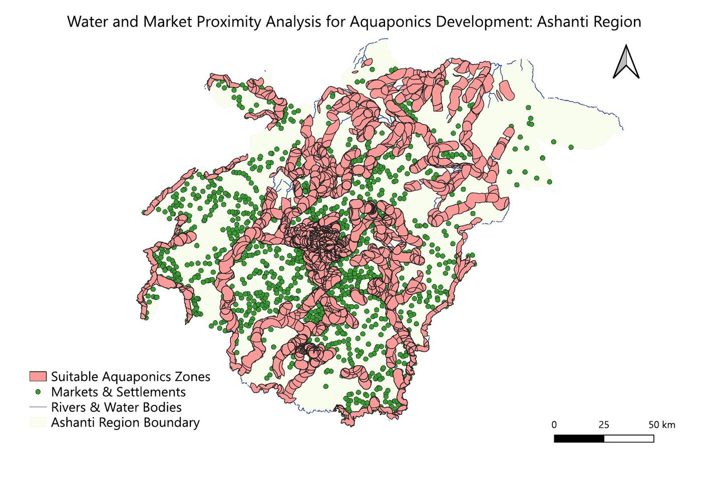
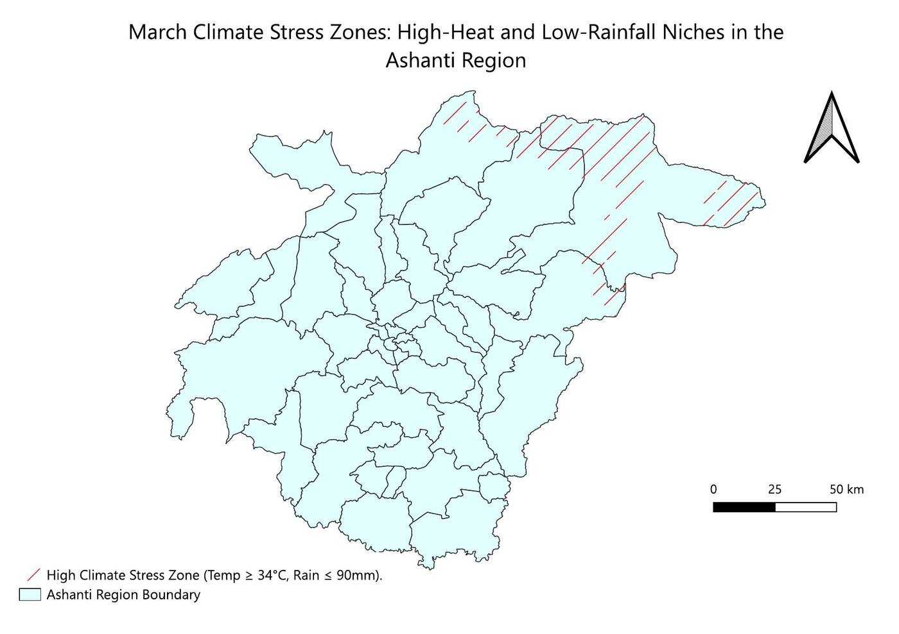

Map available on request
Market access and smallholder vulnerability
Two-hour travel reach of market hubs and the communities left outside it.

Aquaponics site suitability
Land within reach of both water and buyers, for targeting aquaponics support.

Climate stress zones for maize
Land at or above 34 °C with 90 mm of rain or less in March.

Maize yield gaps between districts
District maize yields from 1.2 to 3.63 t/ha.

Drought stress from Sentinel-2 imagery
Sentinel-2 NDVI in five classes during the 2022 summer drought.